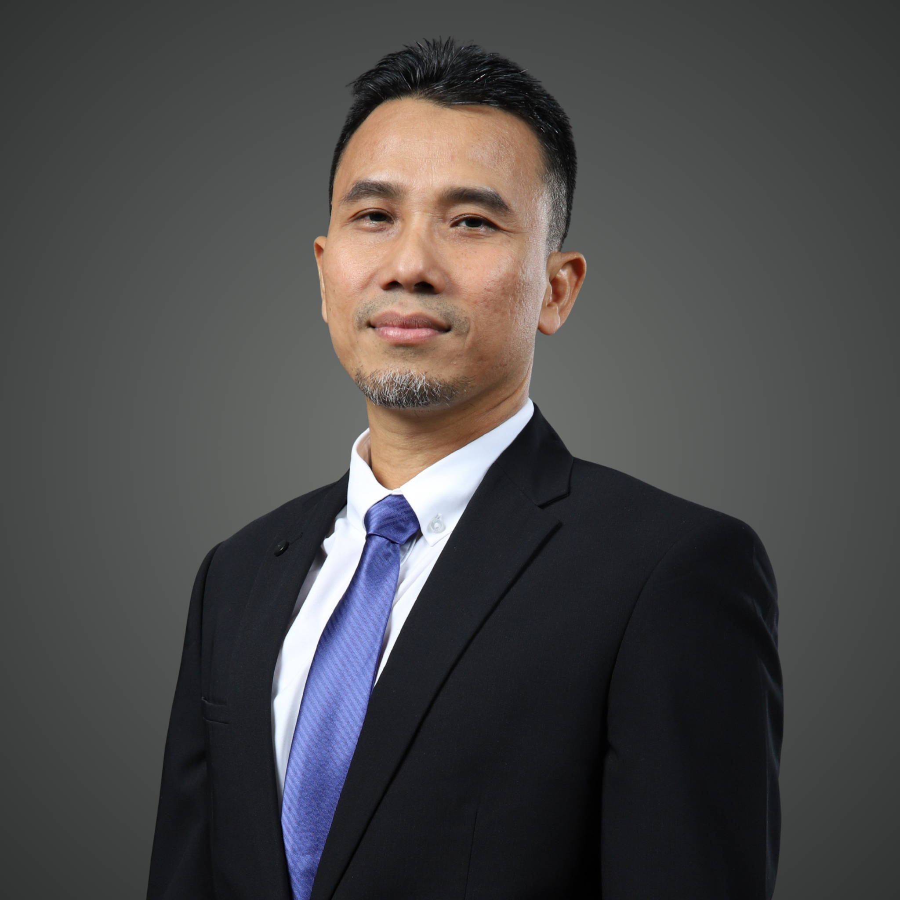
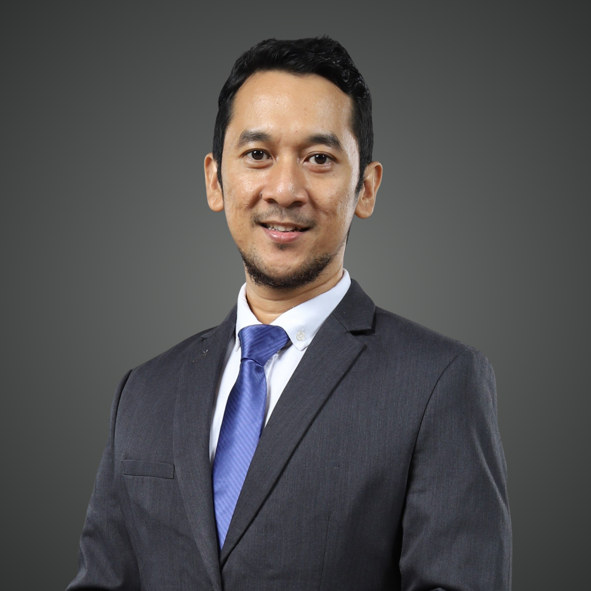
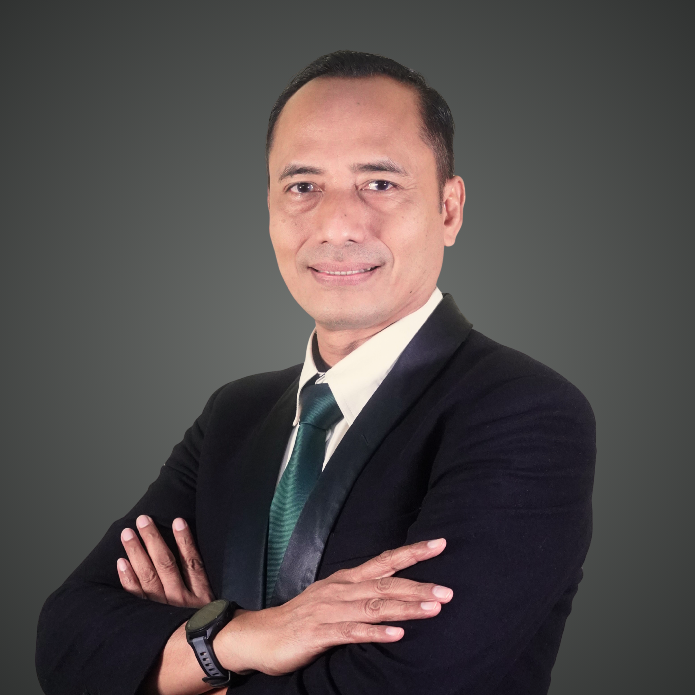
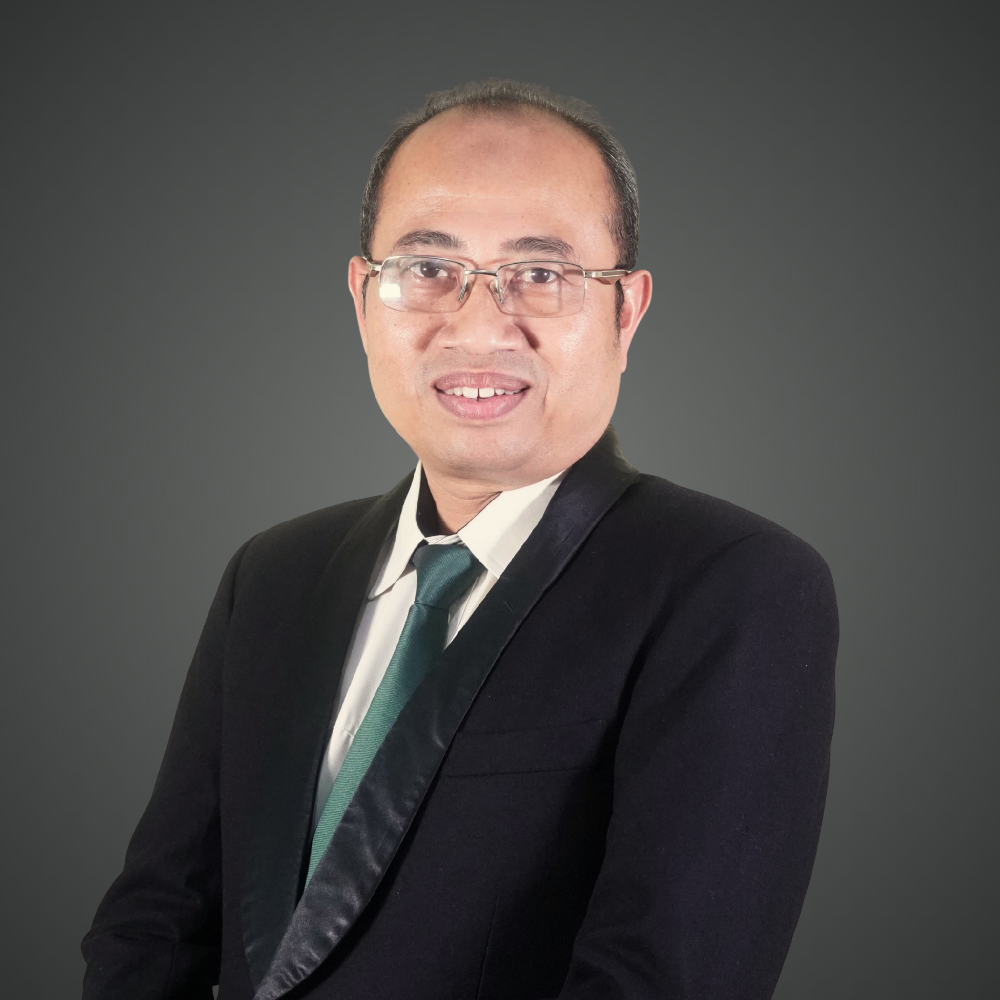
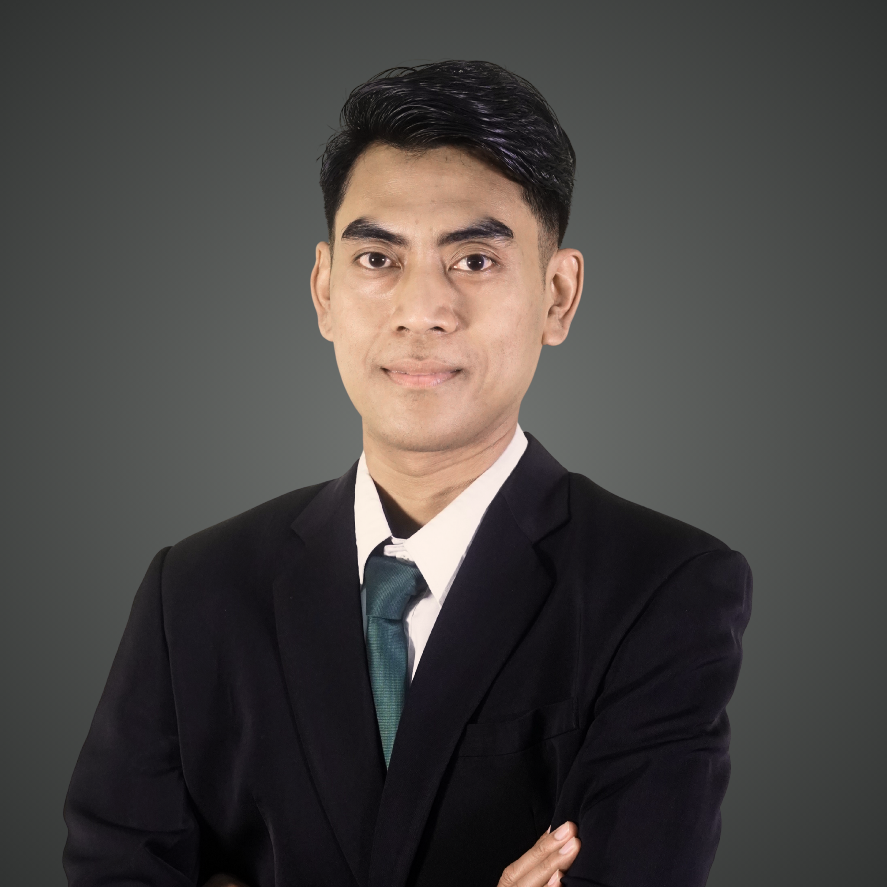

Pimpinan Perusahaan
Dewan Manajemen
Dewan Komisaris

Eko Suroso
Komisaris Utama

Bambang Ariwibowo
Komisaris
Dewan Direksi
-
Direktur Utama

M. Armi Kurnia
Direktur Komersil
Nugroho Iman Prakosa
Direktur Keuangan
GENERAL MANAGER

Abdul Rahman
KOMPARTEMEN PENJUALAN KORPORASI

Widodo
KOMPARTEMEN PENJUALAN RETAIL

M. Faisal Alfarokhi
KOMPARTEMEN SDM, KEPATUHAN, DAN PENGEMBANGAN
Achmad Wahyudi
KOMPARTEMEN ADMINISTRASI KEUANGAN